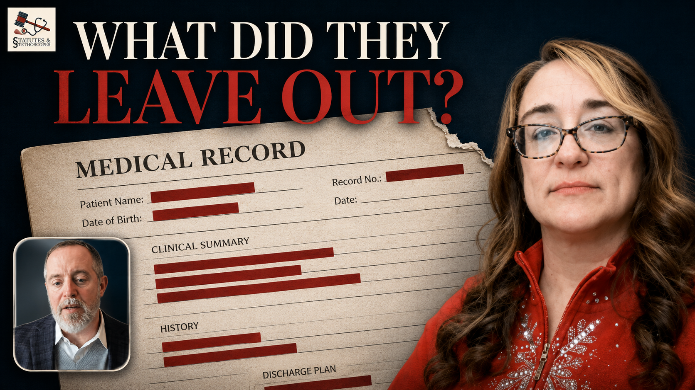
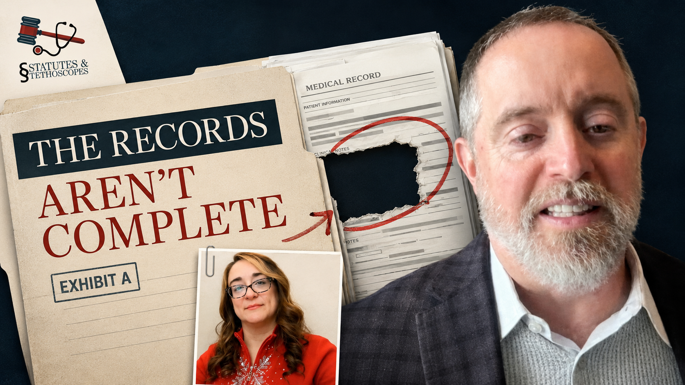

APG Podcast Guide · APG Brand Builder
Statutes & Stethoscopes published its first episode on October 31, 2025. Seven episodes are live, running 33 to 55 minutes.
First priority: the episode with guest Jason Lazarus, onboarded live on the design call.

Physician assistant turned trial attorney, and founder of Med Legal Pro. Host of Statutes & Stethoscopes.
Everything the production team needs in one place, taken from the Med Legal Pro brand guidelines and your asset folder.
Noted on the design call: not every colour below appears in the logo.
Turn listening attorneys into case submissions. This is the goal that pays for the podcast.
Thought leadership, with a specific job. Being known as the person who reads the medicine is what makes the referral feel obvious.
You mentioned needing more guests. A visible, well-produced show makes attorneys want to come on it, and every guest brings their own audience.
| Primary | YouTube (Long-form). Full video episodes, growth engine. All audio publishing platforms, including Apple Podcasts, Spotify, iHeart, Amazon Music and Pocket Casts. Live once the Buzzsprout hosting setup is complete. |
| Secondary (1) | LinkedIn, Tracy's personal profile. Largest existing following. |
| Secondary (2) | LinkedIn, National Expert Academy page. |
| Secondary (3) | Instagram, National Expert Academy. Auto-posts to Facebook. |
A tactical specific outcome is the short line beside the show name that tells a stranger scrolling a podcast app who this show is for and what they get, because the title alone cannot tell them this is a show for trial lawyers rather than a medical one. Option 10 only becomes the right answer once clinician guests are on the show.
Statutes & Stethoscopes | Trial Lessons for Medical Injury Lawyers
Your palette, so the channel reads as one body of work.
A real still from the conversation, with an expression that matches the promise in the text.
Three to five words, one of them highlighted, written to open a question rather than answer it.
Three concepts for the first episodes. Hover any of them to enlarge.
The question a listener already has, made visual. Two faces, and the thin file sitting beside the one that should have arrived.

The redacted record carries the curiosity and the expression finishes it. The guest sits inset so the chart stays the hero.

A statement rather than a question, staged as an exhibit. The torn hole in the chart is the whole idea in one image.
This is the shape of every episode. The guest intro and the outro are pre-produced from your recorded scripts, so you go straight into the first question when you sit down with a guest.
We checked 21 podcasts in your space before writing this, and every claim below points at a named show you can go and listen to.
These are the lanes the show is already running, taken from your own questions across the seven episodes.
This is your ignition question. Ask it in every episode.
The answer is a live description of the problem Med Legal Pro solves, said out loud by the exact person who buys it. That is what makes the ask at the end feel like a natural next step rather than a pitch.
Four lanes to pull from in any episode rather than a running order, with two or three of them usually landing in a single conversation.
Your question, asked from the other end. Ask what a good expert looks like and you get a list. Ask about one that went wrong and you get a story.
Nobody else can host this. You have written in a chart and you have cross-examined one.
One of your guests turned a five thousand dollar offer into forty thousand. It got one line at the very end of a 53 minute episode. That is an episode on its own.
You went here once in seven episodes and it is the most distinctive material on the channel. It also travels furthest beyond your current audience.
We looked at what is already running in your space first, and across the 21 shows we checked, only two of them run a named recurring feature.
A named listener question feature. People email their questions in and the hosts answer a batch in the episode.
Signal: the biggest attorney show we found. 210 episodes, running nine years, 4.8 stars from around 192 ratings, and it charts at number 84 in Apple US Business and Careers.
Two physicians selling medical-legal consulting to injury attorneys, running a listener question episode roughly every six months. Structurally the closest thing to your business that exists.
Signal: 74 episodes, then nothing since July 2024. The format worked. The publishing schedule is what beat them.
No listener feature, but every single episode title carries the verdict amount: “Hernandez v. Colony Capital LLC, $110.2 Million Verdict.”
Signal: 4.7 stars from 133 ratings across eight years. The number in the title tells you the payoff before you press play.
Round Table Group's show. Every episode is an expert being introduced, with a title that reads like a directory entry.
Signal: 186 episodes and one rating on Apple. Interviewing the expert instead of teaching the attorney is a real risk, and this is what it looks like at scale.
Two of these borrow from something already proven, and two go where nobody in this space has gone yet.
A short segment where you take one question about reading a medical record and answer it in the episode. Trial Lawyer Nation has already proven listeners engage with this format.
How we run it safely. We write the questions in-house rather than inviting attorneys to send in live case material, because a lawyer who posts details of an active matter can breach their own client's confidentiality. You get the same segment with none of that risk, and the questions are better because we write them to match what people are actually searching for.
Once the show has an audience, we can open it to genuine listener questions with a properly worded submission form.
A fictional record excerpt goes in front of the guest and they call the red flag inside 60 seconds. This one is for clinician guests, so it starts once medical guests are on the show. No show in this space reads a record out to its audience, it needs both of your credentials to host, and it clips beautifully.
How we run it safely. The records are written from scratch, so there is no real patient and no real case anywhere near it. That removes the privacy and confidentiality question entirely, and it is cleaner than trying to strip identifiers out of a real chart. You say in the episode that the record is fictional, which also makes the segment easier to follow.
One question you ask every guest, right at the end, forever.
“What's the one thing in a medical record that attorneys keep missing?”
None of the 21 shows we checked has a signature closing question. It builds a library that gets more valuable the longer the show runs, and after a year you have a compilation episode that costs nothing to make.
(Audio) Welcome to Statutes & Stethoscopes, the show for attorneys who know that winning a case is only part of the job, and that reading the medical record right matters just as much as what happens in the courtroom. In each episode, I sit down with trial attorneys, forensic pathologists and expert witnesses who have lived the work of turning a chart into a case. We move past the theory to examine how a record actually gets built, tested and defended, because the chart never lies.
(Video) I'm your host, Tracy Liberatore. Let's get into today's conversation.
(Audio) If today's episode changed how you'll read your next medical record, consider sharing it with a colleague and follow the show so you don't miss future conversations with the trial attorneys shaping this space.
Statutes & Stethoscopes is brought to you by Med Legal Pro, where I match attorneys with rigorously vetted medical experts and turn complex records into court-ready work product. If you're sitting on a case where the medical evidence isn't adding up, consider submitting it for review.
I'm Tracy Liberatore, and I'll see you in the next episode.
These rotate, one per episode. One per offer: case submissions, the Academy, and ConflictPro.
(Video) Hey, if you're listening to today's conversation, chances are you're a lawyer with a case file full of medical records you never trained to read.
(Audio) A few thousand pages, no clinical background, and a deadline that isn't moving. That's exactly why I built Med Legal Pro. We take the record review and the chronology off your desk, and we match you with medical experts who've been properly vetted, so the chart comes back to you in a form you can actually try a case from. If that sounds like the file on your desk, scan the QR code on screen or click the link in the show notes, and you'll hear back within 12 business hours.
(Video) Now, back to the conversation.
QR Code: Download QR
Short Link: itl.ink/MLPsubmit-a-case
(Video) Hey, here's something I hear a lot from clinicians. “I'd like to do expert work, I just don't know where to start.”
(Audio) And the honest answer is that the medicine is the part you already have. What nobody teaches you is how a lawyer reads your report. Plenty of good clinicians write an opinion that reads perfectly to another clinician and then watch it get pulled apart the moment an attorney gets hold of it. The National Expert Academy exists to close that gap, walking clinicians through reviewing records for litigation, writing an opinion that survives scrutiny, and understanding how it gets tested. If that's a direction you've been curious about, scan the QR code on screen or click the link in the show notes.
(Video) Now, back to today's conversation.
QR Code: Download QR
Short Link: hov.to/b94e6579
(Video) Alright, we'll get back to the show in one second, but real quick. How many spreadsheets is your practice currently held together by?
(Audio) That's how I ran Med Legal Pro for years, across fifty plus experts and hundreds of active cases, and the part that worried me was the conflict checking. A conflict you miss doesn't announce itself. It turns up months later, when you're deep into a case and the fix is expensive. So we built ConflictPro. It runs a two-level check before you take the case, and it keeps your experts, your case tracking, your billing and your e-signatures in one login. There's a free trial and no card needed, so if that's a risk you'd rather stop carrying, scan the QR code on screen or click the link in the show notes.
(Video) Now, back to the show.
QR Code: Download QR
Short Link: hov.to/949dd734
Every field here is editable. Type the agreed date straight in, then hit Save at the bottom.